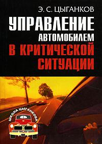

Управление автомобилем в критических ситуациях ... Автор книги – заслуженный тренер России – считает, что нет таких ситуаций на дороге, из которых нельзя найти выход. Предлагаемые им 120 приемов управления автомобилем помогут автолюбителям и водителям-профессионалам предотвратить ДТП и повысить свое мастерство. ...